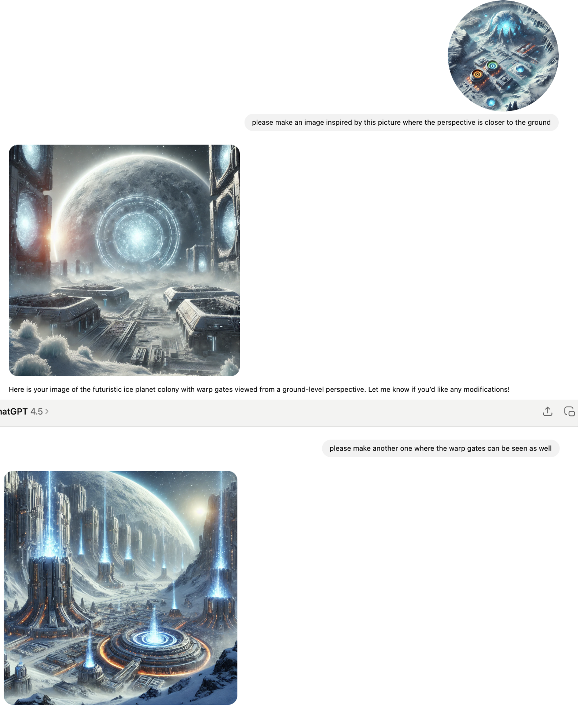

Space Stratego - Grafikken
Indholdsfortegnelse
Sådan lavede jeg grafikken
Alt grafikken til spillet blev genereret med ChatGPT med undtagelse af de her Space Stratego
rumskibe som jeg fandt på en side med gratis billeder. Her er to sider med gratis grafik som
man godt må bruge:
https://www.freepik.com
https://www.pngegg.com
Note: Der findes mange lignende sider.
Da jeg havde fundet nogle seje rumskibe, så kunne jeg bruge ChatGPT til at manipulere dem, så
de fik flere detaljer og var i høj opløsning.
Til at lave warp gates, så skrev jeg bare at ChatGPT skulle generere en masse warp gates. Her er et
eksempel:

Hvordan forbedre man opløsningen af billeder
For større billeder kan man bruge https://imgupscaler.com
For mindre billeder kan man bruge ChatGPT
Hvordan kan man lave animationer
Eksempel 1:
Hvis man skal lave en animation der kører i loop f.eks. vand der glitre, så kan man gøre følgende:
- Klip billedet med vand ud at et større baggrundsbillede.
- Træk det ind i Photo appen og væger Clean up.
- Fjern nu små lysglimt fra vandet fra forskellige steder på billedet og gem en kopi.
- Gentag dette 10 gange men hver gang fjernes lysglimt fra nye steder i vandet.
- Vis billederne i rækkefølge som en lille animation der looper således at det ser ud som om at vandet glitre.
Hint: Når man klipper billedet med vand ud af baggrundsbilledet, så kan man notere koordinaterne til billedets øverste venstre hjørne same hvor stort det klippede billet er. Når man viser billerne til animationen kan man bruge de samme koordinater.
Eksempel 2:
Hvis man skal skal indsætte et mindre billede i et større billede f.eks. en warp gate på en planet, så kan man gøre følgende:
- Sæt det lille billede ind i det store billedet ved brug af Preview appen.
- Træk det ind i Photo appen og væger Clean up.
- Slet kanten af det lille billede, så det ser ud som om at de er en del at det samme billede
Eksempel 3:
Hvis man skal lave en animation der pulserer f.eks. en warp gate der står og skifter farve, så kan man gøre følgende:
- Træk billedet af warp gaten ind i Photo appen. Vælg den dominante farve i billedet f.eks. grøn og sæt Hue til minus 50 og gem en kopi af billedet.
- Gentag dette 10 gange, men hver gang lægges 10 til Hue værdien.
- Vis billederne fra index 0 til 8, og vis dem herefter fra index 9 til 1, således at det vises som en pulserende effekt.
Space Stratego - The Graphics
Table of Contents
How I created the graphics
All the graphics for the game were generated with ChatGPT with the exception of these Space Stratego
spaceships which I found on a site with free images. Here are two sites with free graphics that
you are allowed to use:
https://www.freepik.com
https://www.pngegg.com
Note: There are many similar sites.
Once I had found some cool spaceships, I could use ChatGPT to manipulate them so
they got more details and were in high resolution.
To make warp gates, I just wrote that ChatGPT should generate a lot of warp gates. Here is an
example:
How to improve the resolution of images
For larger images you can use https://imgupscaler.com
For smaller images you can use ChatGPT
How to create animations
Example 1:
If you need to create an animation that runs in a loop, e.g. glittering water, you can do the following:
- Cut the image with water out of a larger background image.
- Drag it into the Photo app and select Clean up.
- Now remove small glints of light from the water from different places on the image and save a copy.
- Repeat this 10 times but each time remove glints of light from new places in the water.
- Show the images in sequence as a small animation that loops so that it looks like the water is glittering.
Hint: When you cut the image with water out of the background image, you can note the coordinates of the top left corner of the image and how large the cut image is. When you show the images for the animation you can use the same coordinates.
Example 2:
If you need to insert a smaller image into a larger image, e.g. a warp gate on a planet, you can do the following:
- Insert the small image into the large image using the Preview app.
- Drag it into the Photo app and select Clean up.
- Delete the edge of the small image so that it looks like they are part of the same image
Example 3:
If you need to create an animation that pulsates, e.g. a warp gate that changes color, you can do the following:
- Drag the image of the warp gate into the Photo app. Select the dominant color in the image, e.g. green and set Hue to minus 50 and save a copy of the image.
- Repeat this 10 times, but each time add 10 to the Hue value.
- Show the images from index 0 to 8, and then show them from index 9 to 1, so that it is displayed as a pulsating effect.